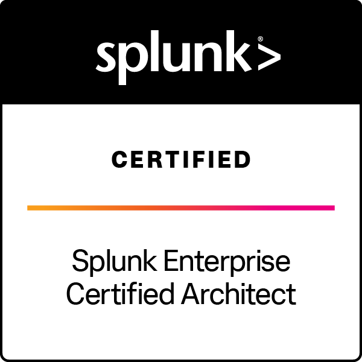

Security Platform Engineering
Distributed SIEM architecture, clustering, data pipelines, upgrades, migrations, RBAC, reliability and performance optimization.
SECURITY PLATFORM ENGINEERING · DETECTION ENGINEERING · SIEM
I’m Oluwaseun Ojimi, a Senior Security Platform Engineer with 10+ years of experience designing, operating, and modernizing enterprise security monitoring environments. My work spans Splunk Enterprise Security, detection engineering, SIEM architecture, cloud security telemetry, CIM, automation, and platform optimization.
ABOUT
I specialize in building reliable security platforms that help SOC and engineering teams collect the right telemetry, normalize it, detect meaningful activity, investigate efficiently, and automate repeatable operations. Splunk is a core area of depth, but my focus is broader: scalable security analytics, platform architecture, cloud telemetry, detection quality, automation, and operational resilience.
EXPERTISE
Distributed SIEM architecture, clustering, data pipelines, upgrades, migrations, RBAC, reliability and performance optimization.
Splunk ES, correlation searches, event-based detections, Risk-Based Alerting, CIM, accelerated data models, investigation workflows and tuning.
AWS CloudTrail, IAM, S3, VPC Flow Logs, GuardDuty, LDAP/OpenLDAP, Windows, Linux auditd and database audit telemetry.
Python, Ansible, REST APIs, HEC automation, Cribl routing/filtering, onboarding standards and repeatable platform validation.
FEATURED PROJECTS
Public examples are recreated from lab or sanitized environments. No confidential employer architecture, production screenshots, sensitive identifiers, or proprietary configurations are published.
A multi-tier security monitoring lab designed to demonstrate the complete detection lifecycle: telemetry → ingestion → normalization → ES detection → RBA → investigation → response.
Detection design for privileged IAM changes with risk scoring, investigation context and false-positive controls.
Case study planned
CloudTrail-focused analytics for suspicious object access and exfiltration patterns with investigation pivots.
Case study planned
Lab tooling for generating repeatable security events used to validate ingestion, CIM mapping and detection behavior.
Case study planned
Engineering patterns for reducing unnecessary ingest while preserving telemetry needed for security investigation and compliance.
Case study planned
OpenLDAP-based lab integration for identity enrichment, authentication telemetry and Splunk RBAC workflows.
Case study planned
CERTIFICATIONS
Featured credentials verified through Credly.
